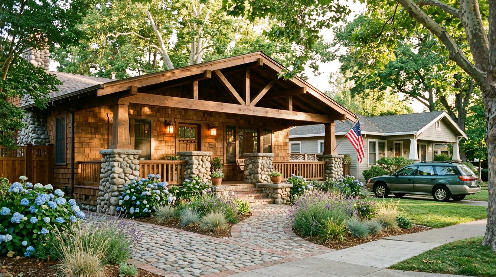
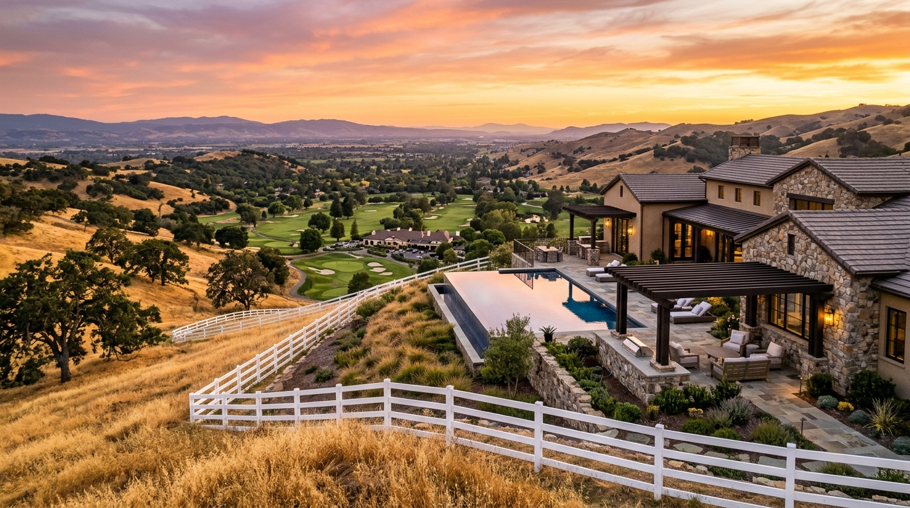

EXPLORE THE NEIGHBORHOODS


Find your corner of Dublin
GOLF COURSE · LUXURY HOMES
Dublin Ranch & The Terraces →
Robert Trent Jones II golf course enclave featuring grand semi-custom and custom single-family homes with panoramic Tri-Valley valley views.
ELEVATED FOOTHILLS · MODERN
Positano & Schaefer Ranch →
Scenic hillside developments offering peaceful canyon topography, modern floor plans, and sweeping sunset perspectives.

RESORT-STYLE · URBAN VILLAGE
Boulevard →
Master-planned village centered around a 14,500 sq.ft. community clubhouse, resort pool, pocket parks, and direct pedestrian trail to Dublin/Pleasanton BART.

ESTABLISHED · SPACIOUS YARDS
West Dublin →
Classic single-family neighborhoods tucked beneath the Dublin Hills, featuring larger lots, tree-lined streets, and rapid access to Dublin Hills Regional Park.